Emulator — nastavak pregleda
Nije puna konačna vizuelna provera svih deset tema i soba. Nisu odigravane partije, preuzimane nagrade, aktivirani efekti, menjani profili niti slati pozivi. Jedan automatski test interstitial pri izlasku iz Top liste je zatvoren; nije pokretan rewarded ad.
Javni theme-settings-room.js vraća HTTP 200, ali ne sadrži lokalni decoded-prepare popravak. Snimci su sa objavljene verzije pre lokalnih popravki.
Vidljivi Android ekrani i ADB ulaz/snimci; prozor emulatora potvrđen i prikazan kroz Computer Use. Bez WebView debug porta ili čitanja sesije.
Puna evidencija · Prethodni prolaz
Četiri nova nalaza
R04 — Zelena / Statistika
Beli naslov, opis i broj na svetloj kartici Indeksa moći.
Tamnozeleno mastilo #254c32, bez senke i promene dimenzija. Kontrast proveren prema oba kraja postojećeg svetlog gradijenta.
lokalno ispravljeno; vizuelna potvrda čeka deploy
R05 — Svih deset tema / persistentna rang-lista Vatrenog niza
Zaglavlje skrivenog modala ostaje u prethodnoj temi, dok redovi koriste novu.
Pri svakom otvaranju primenjuje se postojeći kanonski PNG aktivne teme; nema novih crteža. Regresioni test ponovo otvara isti modal u svih deset tema.
lokalno ispravljeno; vizuelna potvrda čeka deploy
R06 — Devet nezelenih tema / Statistika i obe rang-liste
Posebna CSS pravila zaobilaze Green bezbedne margine i menjaju raspoloživu visinu.
Iste formule top/bottom/side sa --safe-top i --safe-bottom kroz --theme-room-*; mali razmak pregleda usklađen sa Green 6px standardom. Boje i materijali sačuvani.
lokalno ispravljeno; vizuelna potvrda čeka deploy
R07 — Svih deset tema / glavna kartica Kvartalne lige
Na 411px tekst prelazi u dva reda i iznos poena se skraćuje, iako 360px prikaz staje.
Pravilo za kompaktnu tipografiju lige važi do 480px; geometrija kartice, logo i funkcije nisu menjani. Veličina ekonomskog broja ostaje u svom ranijem 360px pravilu.
lokalno ispravljeno; vizuelna potvrda čeka deploy
Stvarno pregledano
| Tema | Vidljivi prikazi ovog prolaza |
|---|
| dark | Top lista: globalna i prazna lokalna; Statistika: pregled, H2H i obe rang-liste; Pravila: prva strana; Detalj H2H rivala; Pravila: šesta strana; Glavni meni: 411px i 360px |
| light | Top lista: globalna i prazna lokalna; Statistika: pregled, H2H i obe rang-liste; Pravila: prva strana |
| medium | Preostalo za pregled u emulatoru |
| winter | Preostalo za pregled u emulatoru |
| neon | Preostalo za pregled u emulatoru |
| amethyst | Preostalo za pregled u emulatoru |
| easter | Preostalo za pregled u emulatoru |
| desert | Preostalo za pregled u emulatoru |
| moon | Preostalo za pregled u emulatoru |
| severna | Preostalo za pregled u emulatoru |
Dokazi sa objavljenog koda pre popravki
dark — Glavni meni na originalnom ekranu
411 × 891: naslov lige prelazi u dva reda, poeni su skraćeni.
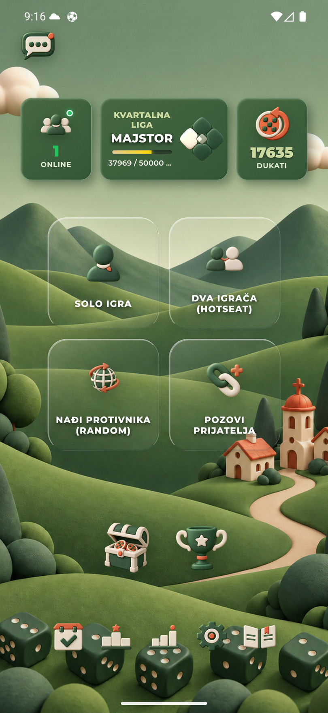
dark — Top lista — globalna
Tri medalje i ispunjena lista; 360 × 780.
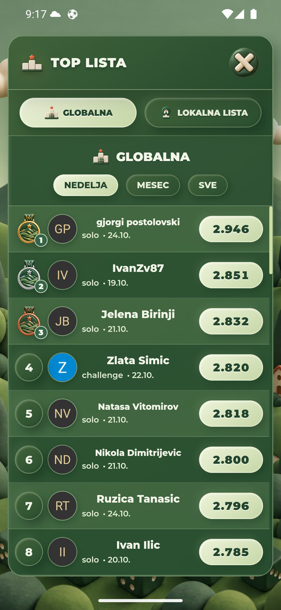
dark — Top lista — prazna lokalna
PNG praznog stanja i njegov tekst.
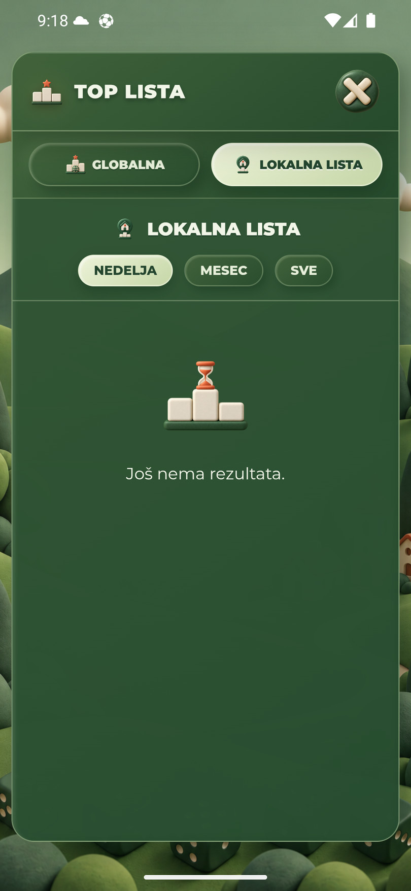
dark — Statistika — pregled
R04: beo tekst na svetloj kartici Indeksa moći.
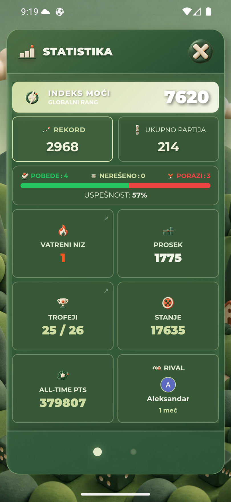
dark — Rang-lista Indeksa moći
Kanonske medalje, broj, identitet i avatar.
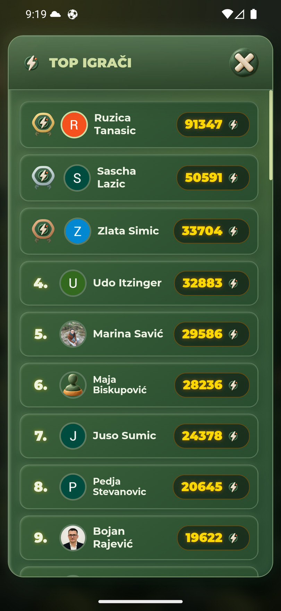
dark — Rang-lista Vatrenog niza
Kanonske medalje, aktuelni i prekinut niz.
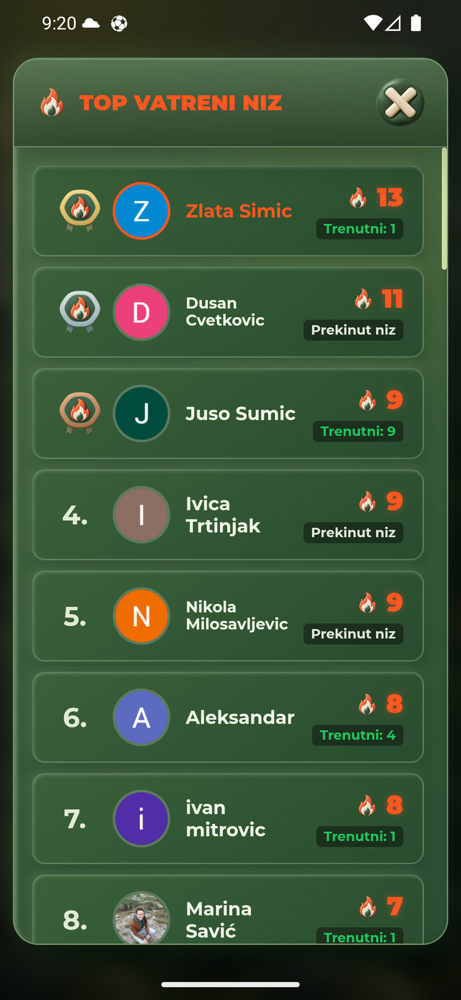
dark — Statistika — H2H
Lista rivala i otvoreni drugi prikaz.
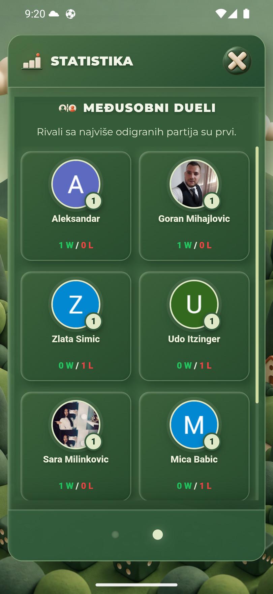
dark — Statistika — detalji rivala
Otvorena kartica, bez deljenja ili pozivanja na duel.
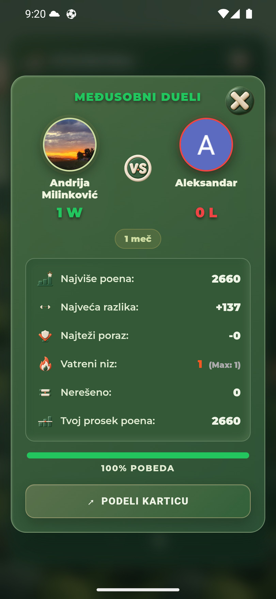
dark — Pravila — prva strana
Tekst, oznake kolona i kanonske ilustracije.
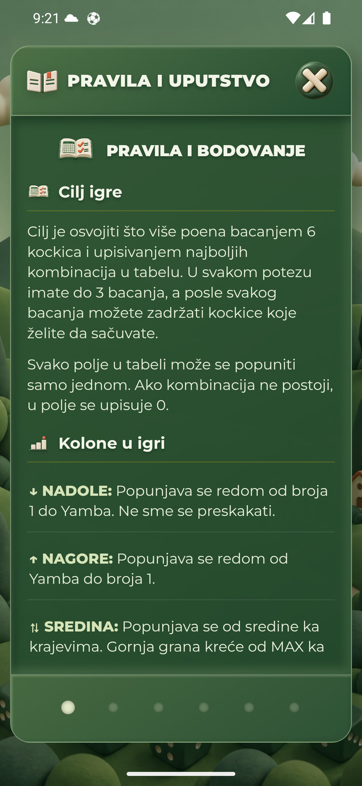
dark — Pravila — šesta strana
Dugačak naslov i tekstualni sadržaj; bez promene podešavanja.
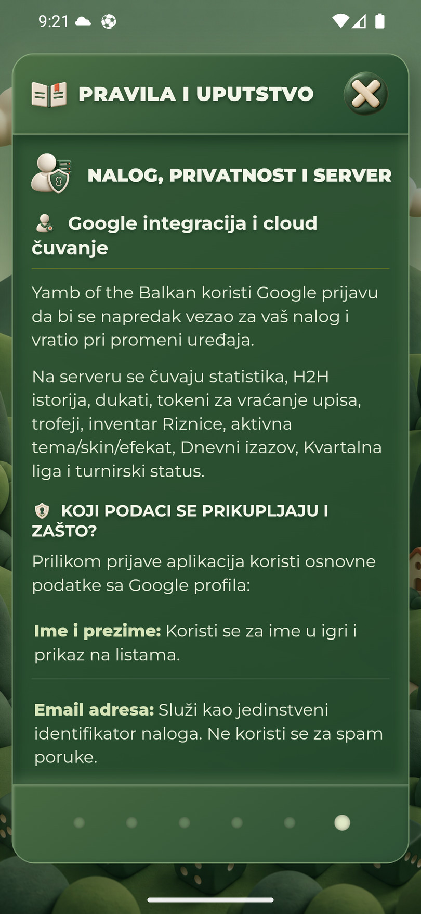
light — Top lista — globalna
Naziv izvornog snimka je istorijski; ovo je globalna lista.
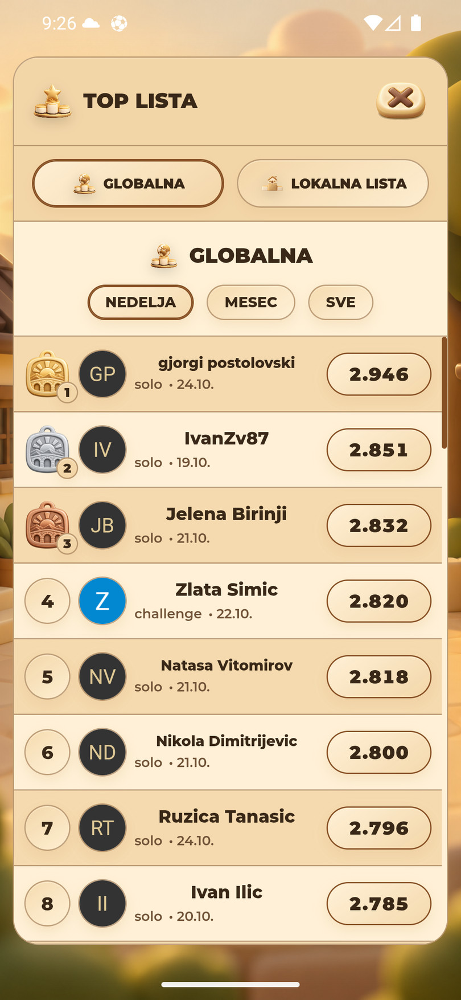
light — Top lista — prazna lokalna
Isti slot praznog stanja, PNG Svetlog zlata.
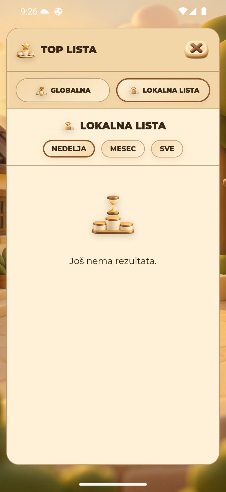
light — Statistika — pregled
R06: različite spoljne margine od Zelene.
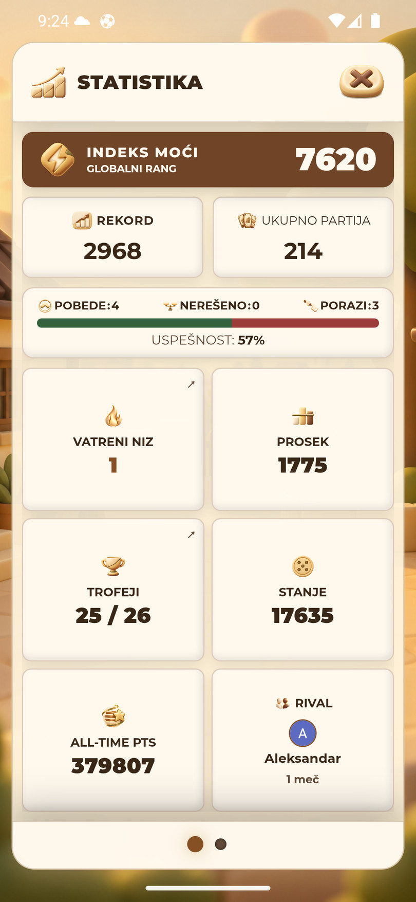
light — Statistika — H2H
Naziv izvornog snimka je istorijski; ovo je druga H2H strana.
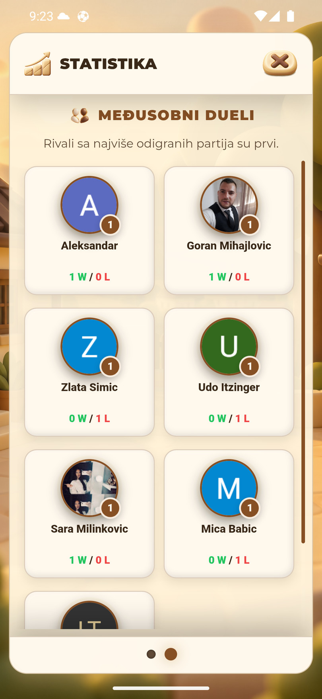
light — Rang-lista Indeksa moći
Zasebne zlatne, srebrne i bronzane medalje.
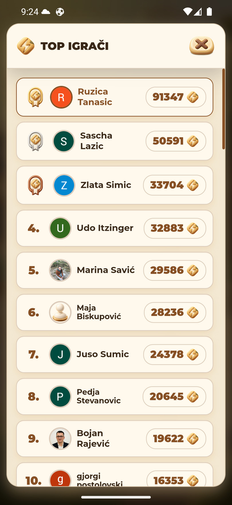
light — Rang-lista Vatrenog niza
R05: prethodni zeleni plamen u zaglavlju, odgovarajući zlatni plamen u redovima.
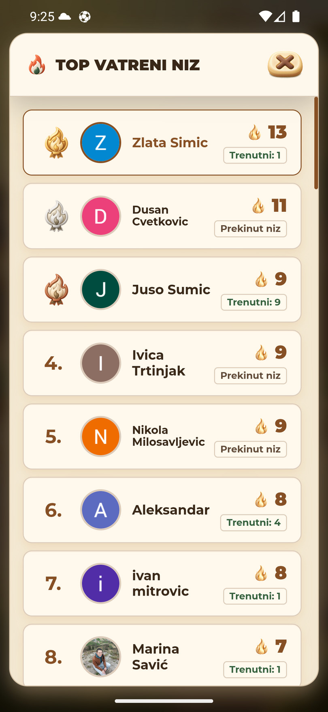
light — Pravila — prva strana
Tematska paleta i nove ilustracije.
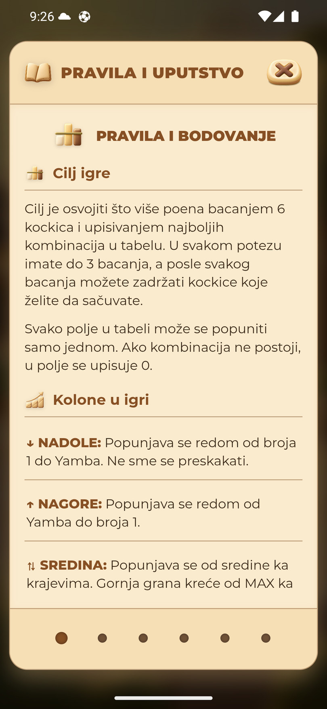
Sledeće
- Korisnik objavljuje pripremljene lokalne ispravke (uključujući R01–R03 prethodnog prolaza).
- Ponoviti R04–R07 na objavljenoj verziji, zatim nastaviti ovim prikazima u preostalih osam tema.
- Nastaviti ostale sobe i retka stanja iz prethodne evidencije; ne označavati ih kao proverene bez snimka.
Originalni PNG snimci ostaju lokalno u tmp/emulator-followup-2026-10-25. Ove JPEG kopije su dokazi pregleda, nisu novi assets aplikacije.